Photomake
UI/UX Design
Overview
Photomake is a website designed to offer tailored and high-quality photography services to individuals seeking to capture the memorable moments in their lives. The primary goal is to showcase its services and entice a broader customer base. They want to leverage their business through an online website.
Team: Stefania Olteanu - UI/UX Designer & Developer, Konstantinos - Developer
Task: A responsive web app (mobile-first) to include at least 2 courses tasked by KEA as a final project.
Duration: 10 weeks
Tools: Paper & Pencil, Adobe XD, Photoshop, Illustrator, HTML, CSS, JavaScript, Bootstrap, Django, Python and PostgreSQL
The Problem
The website used to attract lots of customers but the circumstances changed over the past years. Having an old-fasioned design, a slow and unsecure website providing bad user experience encorajed people to not choose the copany.
The Solution
A user friendly, responsive and modern website. The website needs to be secure offering a great User Experience and following Google's SEO best practices. The information easily accessible with enough detail to make an informed decision.
Challenges
• Understand what the business wants to get out of the redesign.
• Understand the user pain point.
• Improve usability and the overall user experience.
• Redesign the solution tailored to the business' goals while keeping user needs in mind.
Design Thinking Process
We followed the Design Thinking Process to create a website that meets the needs of our users. This process involved empathizing with our users' needs and pain points using research techniques, defining who we designed for using personas and journey maps, ideating user flows, sitemaps, and wireframes, prototypes using Adobe XD, and testing using usability tests.
01. Empathize
To gain insight into the market and user needs, we conducted three types of research: user research, business research, and competitive research. The user research focused on understanding the needs and pain points of potential users. The business research focused on understanding the market and opportunities for the product. And the competitive research focused on understanding the strengths and weaknesses of competing products.
Business research
Goals:
• Collect additional insights about the current situation of the business.
• Understand the business needs, goals, desires, and assumptions regarding the users and their needs.
Interview
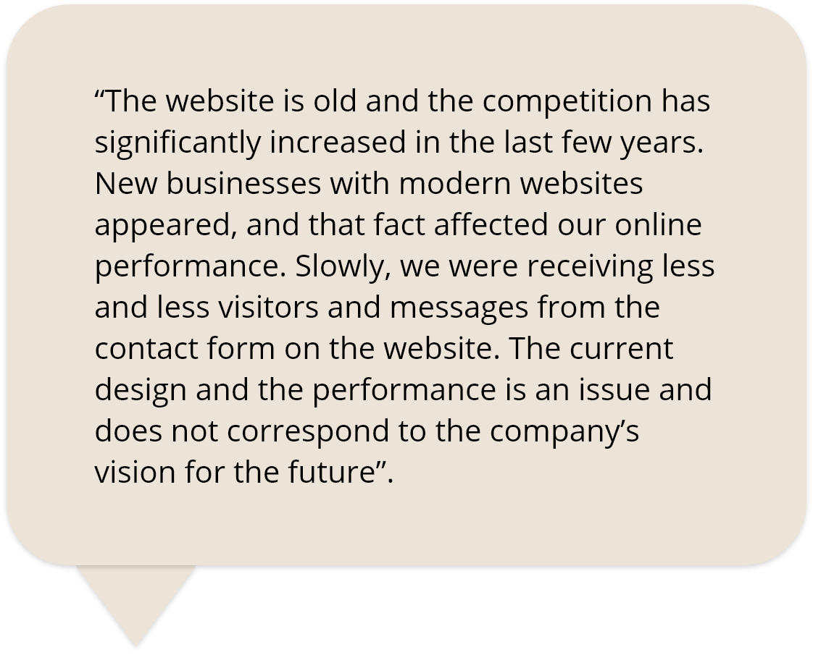Furthermore, Antonis assumed that most of the users are from mobile devices and he mentioned that the website is very important to be mobile-friendly and fast for the visitors. In addition, he would like the new design to promote the social media accounts which the company uses, such as Facebook, Instagram, Pinterest, and other digital channels, such as Google My Business.
Identity and Image
• The image of the company is plain and positive.
• The customers trust them, are satisfied and loyal.
• The high-rated reviews on Google My Business and the testimonials from the clients, enhance the business’s image and establish trust.
Business Model Canvas
We used the Business Model Canvas framework to outline the business model. We collected in a single page all the critical aspects around the company: the target audience, the customer segments, the key partners, the channels, how the business creates value for its customers, the key activities & resources, and the revenue streams.
This helped us to visualize and understand the core elements of the business and what is important.

Competitive research
We outlined the main competitors and specified their strengths and their weaknesses in order to identify opportunities, threats and potential competitive advantages.
Competitors
In a close area are currently more than 11 photography studios, competing for the same target audience.
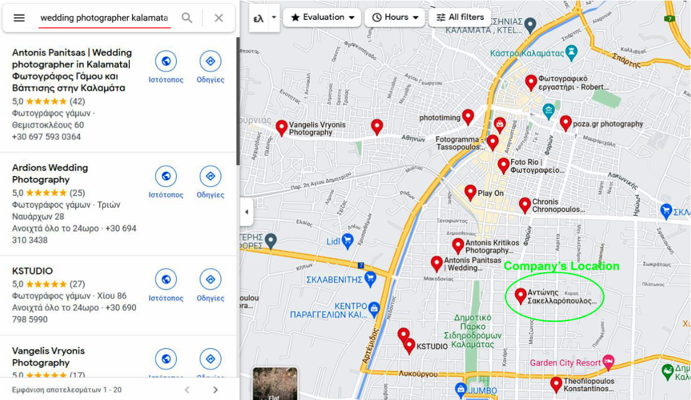The red icons on the above image from Google Maps are wedding photographers in the city center of Kalamata in Greece and in the green circle is Antonis Sakellaropoulos Photography studio.
From this list, which does not include freelancers or businesses without websites, we created a smaller group to compare in our research, taking into consideration the websites with the higher rankings on Google Search and the top reviews on Google My Business, as well as the businesses, which the CEO pointed out as his most direct competitors.
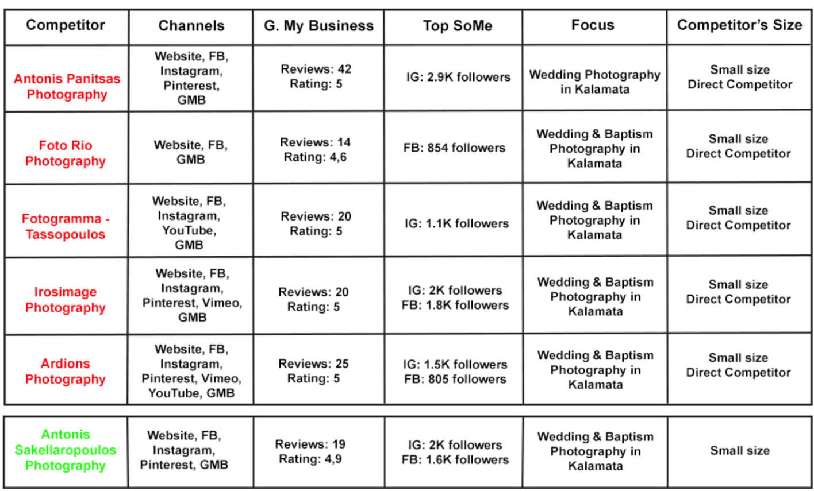Sidestep
To make initial comparisons between our competitors, we used Sidestep to conduct a feature analysis of their websites.
• There are many small and good companies with high ratings, good reviews and strong previous projects.
• None of the competitors offers good loading speeds and performance on their websites, according to the latest standards on Google Search (Core Web Vitals).
• Only one competitor mention their partners on the website.
Note: The partnerships could enhance the customer trust and mentioning them on the website is an advantage. Moreover, this strategy can improve the relations with the collaborators and create additional opportunities for digital exposure on their websites.
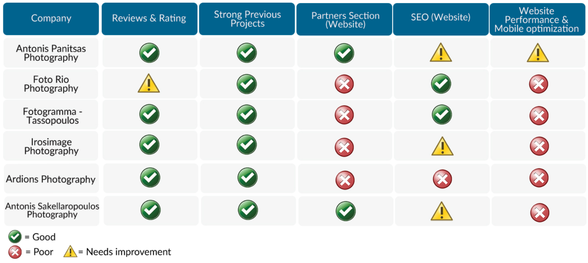Activity Analysis
We conducted 5 activity analysis of our competitors' websites, one for each competitor. The goal was to uncover pain points, risks, and opportunities for our own web application.
SWOT Analysis
SWOT analysis was an important step in order for us to focus on the business's competitive advantages and to design the new solution in a way that will eliminate current weaknesses and exploit potential opportunities, while taking into consideration future threats.
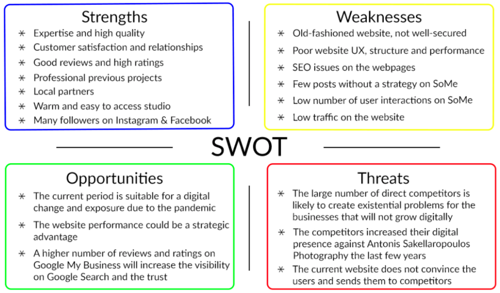TOWS Analysis
In addition, we created a TOWS matrix based on the findings from the SWOT analysis. We used it to develop an action plans by combining threats, opportunities, weaknesses and strengths.
This analysis shows that the business can focus more on social media and engage with a larger audience by following a consistent strategy. The SoMe channels could give multiple benefits to the company and additionally are important places to promote and communicate the new website.
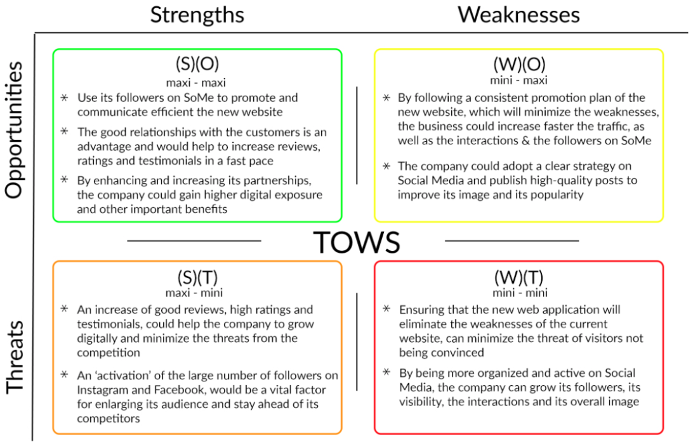User research
Having analyzed the online environment in which our product will be operating, the next step is to dive deeper into the thoughts, attitudes, and desires of our target users.
Goals:
• Understand how users are currently using the website.
• Identify the pain points the users encounter based on how long they use the website and how many screens they visit.
• Gather user feedback on what they like and dislike about the website.
• Better understand the factors that influence the decision to choose a photographer, including motivations, behaviors, and potential roadblocks.
Interviews
We conducted three interviews with persons of different ages and genders having the goal of understanding what users think about the website.
Results:
• The users understood that the website is about "wedding photos". - This is partially correct but the other services couldn't be noticed.
• The Home page looks like a "gallery". The instinct was to scroll down expecting to see some information. We need to provide the information that was missing on the Home page.
• The website didn't convince the users to contact the company. One person said: "I only saw beautiful images, but nothing else to make me contact the company".
• The website wasn't considered trustworthy because of the lack of information. For a website to be considered trustworthy it needs to include: "customer's references, a picture of the photographer, and some information about the company".
• One user said that: "the navigation is too small and seems to be not important".
• All of them suggested making the contact information "more visible", reducing the number of images, and having “the possibility to see more.”
Think-aloud test
We conducted Think-aloud tests to understand how easy it is for the users to interact with the website, having the opportunity to listen to how they think while performing the tasks. We used test templates and notes to document the tests.
Results:
• Participants scrolled down the Home page to discover more information about the company and its contact details.
Conclusion:
• This highlights the importance of placing key information on this page.
• Overall, this reinforces the need for a clear, intuitive layout that encourages user engagement.

Trunk test
To create a site that is comfortable for users we needed to test the navigability of the existing one.
Questions:
1. What site is this one? (Site id)
2. What is the page about? (Page name)
3. What are the main sections? (Section names)
4. What navigation options do you have? (Local navigation)
5.On which page are you now? (“You Are Here” Indicators)
Results:
• The users had difficulties in understanding where they were because the Home page had no title and it was misunderstood as a gallery.
• The main sections of the Home page were identified as being an extensive gallery and a small menu.
• For the rest of the website, it was more clear because all the other pages had a title.
Five second test
To determine if the design effectively communicates its primary message to the audience we performed the Five second test, knowing that the users make important judgments in the first moments they visit a page.
In total, we had 5 participants and the image tested was the first section the users see when they enter the website.
Results:
• All the participants understood that this website is about weddings and that the company does wedding photographs.
• The most prominent element on the website was the gallery and the users expected to see more images when they scroll.
• The users think that the design looks “heavy and unorganized”, “like a gallery” where “the text is too small”.
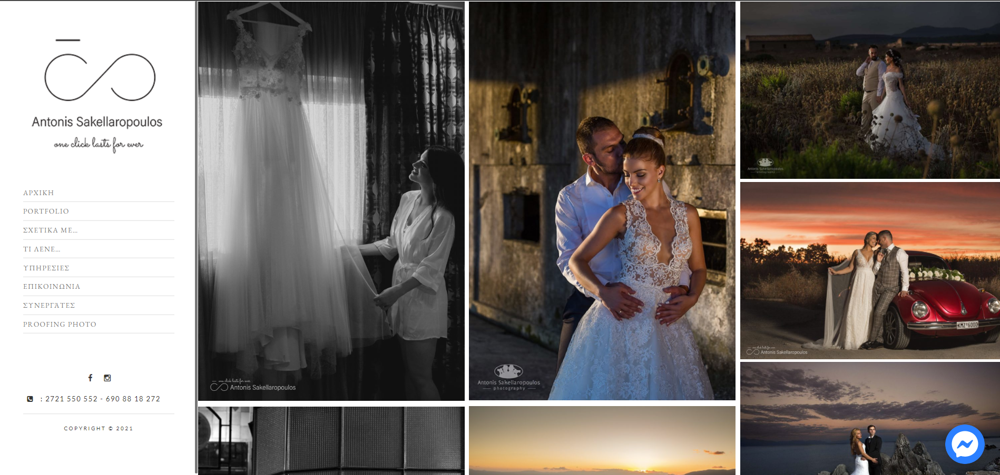02. Define
Our research uncovered common themes and challenges among our target users, which allowed us to develop two personas: Sophia and Alexander. These personas provided a human-centered lens to guide our design decisions, ensuring that we were addressing real user needs and pain points.
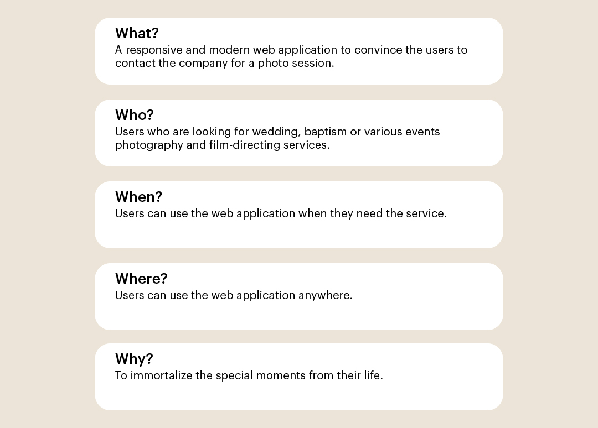 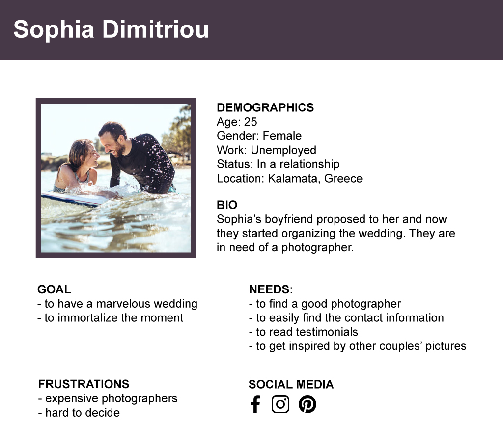 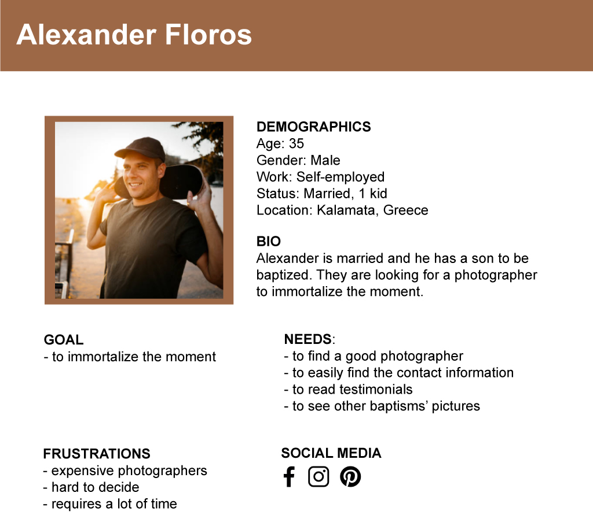03. Ideate
With a deep understanding of the problem and target users, we're ready to explore a wide range of creative ideas, trying to come up with solutions.
Site map
We used it as a website hierarchy to visualize how the pages and the content fits into the website. In our project, the hierarchy is rather flat with only 3 levels, to keep the website as simple as possible and constantly ensure that the customer takes fewer steps to reach the goal.
I used Optimal Sort to conduct an open card sort with five participants. The results revealed the need for an additional page, originally called "Images" but rebranded as "Portfolio" for clarity. This page will provide users with a visual showcase of the product or service, helping to convey its value and appeal.

User Flows
I developed user flows to accomplish 3 key tasks: contacting the company, finding the wedding photographs from previous work, and finding information about the photographer.
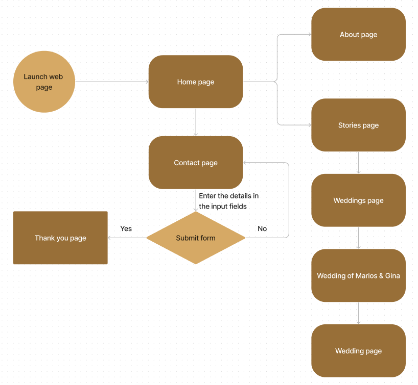Crazy 8's
We used sketches to brainstorm ideas about how the website could look like, taking into consideration current trends and the feedback we had from our user tests. Crazy 8's is challenging but it brings up the first intuitive thought and puts it on paper.
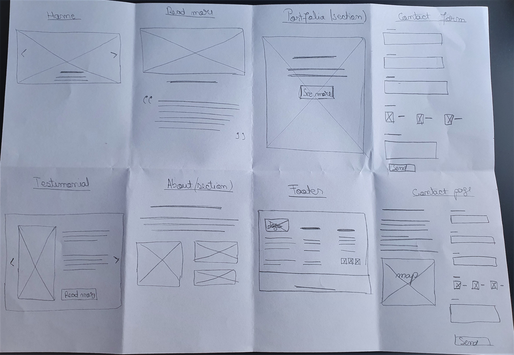Wireframe
To move forward, I started sketching low-fidelity wireframes and then I transitioned from pen and paper sketches to digital wireframes using Adobe XD. The wireframes went through multiple iterations, each time refining the website's functionality and user experience.
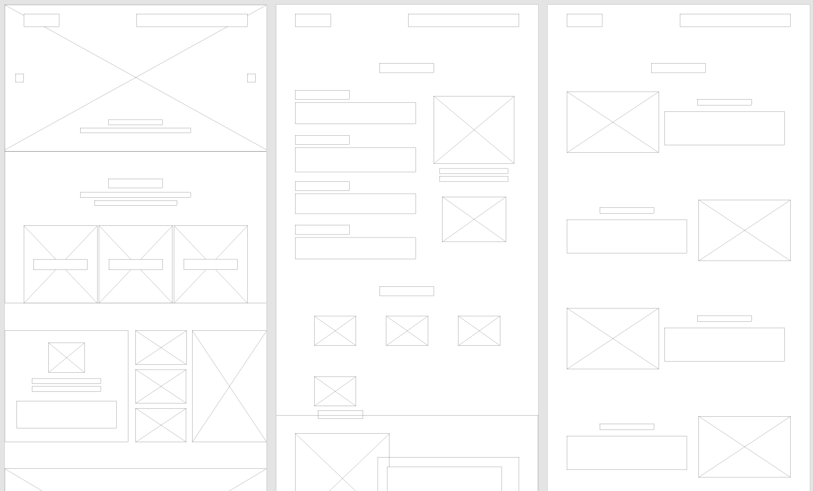 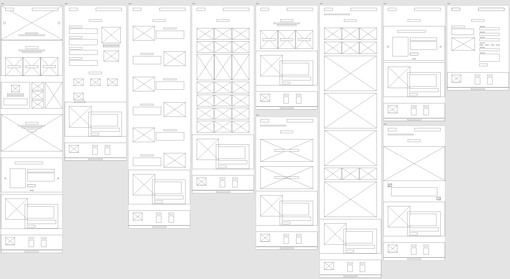 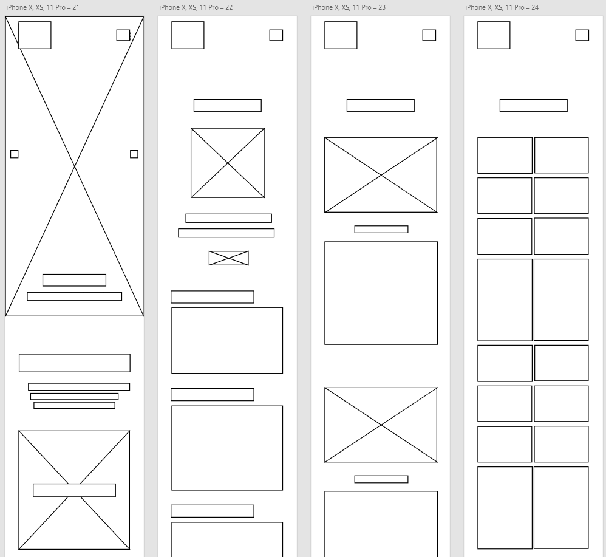04. Prototype
We used Adobe XD to add the visual elements to the website and enhance its visual appealing.
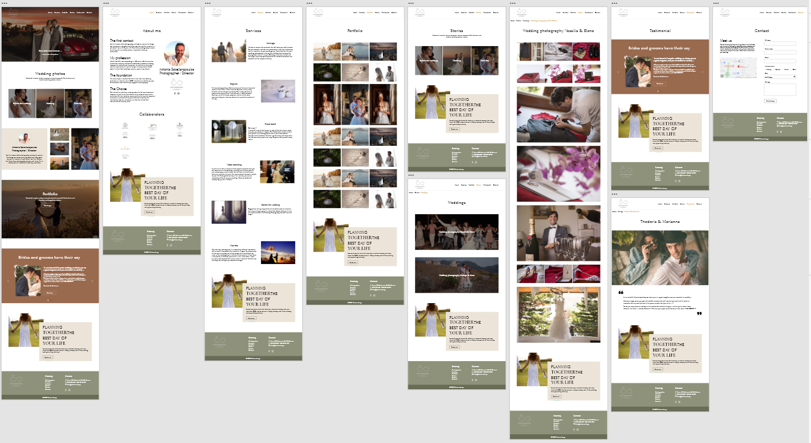 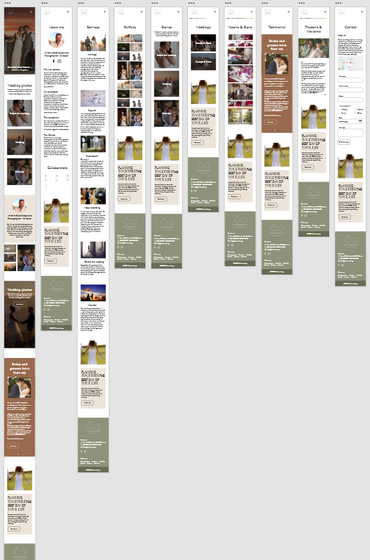See the mobile version of the prototype
See the desktop version of the prototype
05. Test
We tested the usability of the designed website using the prototype and the same tools as before: Think-aloud test, Trunk test and the Five second test.
Think-aloud test:
• The users had a good overall impression, finding the website as being fluent, offering all the information needed.
• Easy to understand what the company does.
• They felt convinced to contact the company, specifically due to the "interesting section" at the end of the page.
• The website was perceived as being trustworthy due to the comprehensive information given about the photographer, company address, portfolio, and testimonials which were highly required by the users themselves in previous tests.
Trunk test:
• The users didn't have difficulties in understanding on which page they were on.
• The main sections of the Home page were easily identified since all of them have titles.
• The navigation was easy to find and the options were visible.
Five second test:
We tested the same page with the same users but this time using the prototype in order to see if we fixed the previous issues.
•All the participants understood that the website is about wedding photographs. - While this is the main service, the others are not shown on the first screen. The user has to scroll down a bit to see the other services. Since all the users tended to scroll down to see more information, we decided to not change it for now.
• The most prominent element on the website was the image.
• They think the design looks “clean, elegant and modern”.
Note: No recommendations have been made regarding any potential changes.
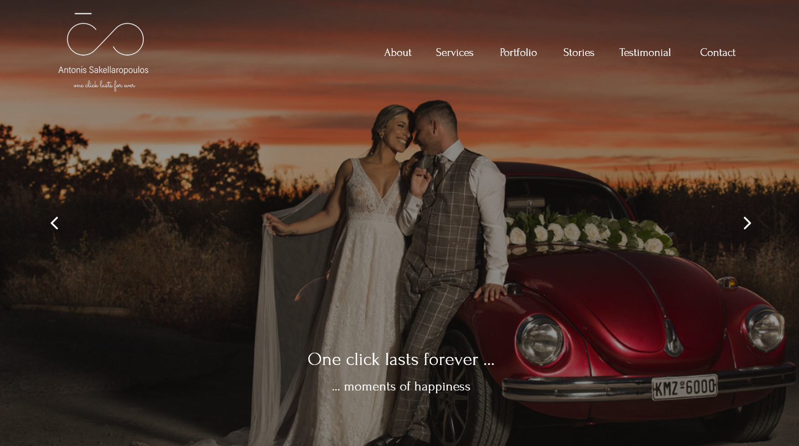06. Visual Design: Style Guide
To maintain visual coherence across the website, we established a style guide that included real images and brand-aligned colors. These elements were carefully selected to create an uplifting and motivating user experience that showcases attainable possibilities.
Style Tile
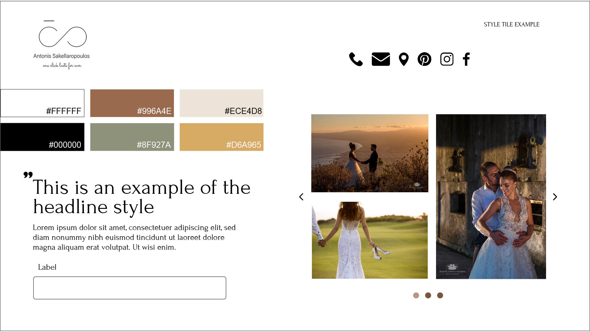Colors
The colors have the intention to represent the company's main service which is why we used mainly white and a few other colors to create accents. Gold is a precious metal associated with “wealth, prosperity, and riches”. Brown is associated with the earth and it represents stability and support. Green is a color that represents growth, harmony, prosperity, and stability. Black is often associated with power and elegance. White stands for clean, minimalism, and simplicity. It is also the most neutral color and in some cultures is a symbol of purity.
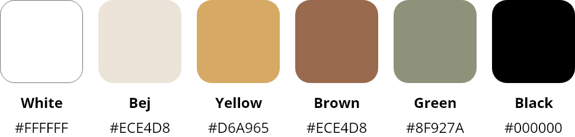Typography
Roman serif fonts are known for their legibility. We chose our font to be Forum which has “antique, classic Roman proportions”. The font is also multilingual, which was a very important criteria for us because the main language for the website will be Greek.
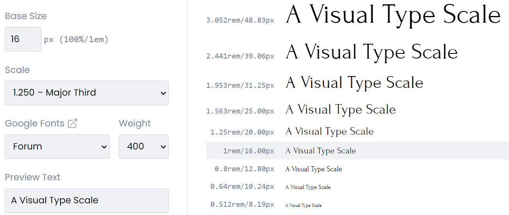07. Reflactions
Throughout this project, I've pushed myself and learned a ton about UX and UI design - and about myself, too! I've found that the old adage, 'learning by doing,' holds true; I've internalized techniques and skills in a way that I feel ready to tackle any UX challenge that comes my way.
Due to time constraints, we had to conduct limited testing with fewer participants, focusing on the core functionality of the website. If we had more time, we would have performed more comprehensive testing to validate the entire website. Additionally, we would have explored redesigning the hero section of the homepage to feature all the services, instead of just the main one. Peer review is another method that could be employed to gather suggestions for enhancing the website in future updates.
08. Evaluation
The final exam evaluation was a smashing success! We both earned the highest possible score and successfully completed the education!" 🎉
Have a project in mind?
Feel free to reach out and let's chat!